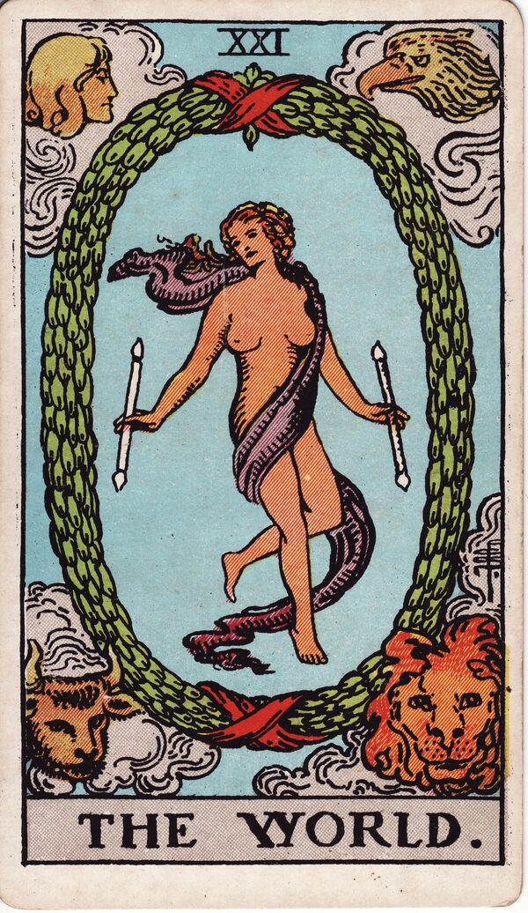

Major Arcana · Card 21
The World Tarot Card Meaning
The World is completion and fulfillment — wholeness, and a cycle brought full circle. Want to know what it means in your spread? Every reader on our line is hand-vetted — connect in under 60 seconds, $1 for your first minute, hang up anytime.
- Hand-vetted readers
- Available 24/7
- Hang up anytime

The World Card — What It Shows
The World card has a woman dancing at its center, one leg crossed over the other, holding two wands or batons — a symbol that what The Magician once manifested has now come to completion. A green wreath of flowers surrounds her as a symbol of success, and the red ribbons wrapped around it are a sign of infinity. In each corner are four figures representing Scorpio, Leo, Aquarius, and Taurus; together they symbolize the harmony between all their energies.
The World Upright Meaning
Upright, The World is completion, fulfillment, and wholeness — a cycle brought full circle, everything coming together. It gives you approval to do whatever you want: to express yourself fully, without needing affirmation or consensus from others. You've arrived; the card invites you to inhabit that, not seek permission for it.
The World Reversed Meaning
The World is one of only two cards that don't carry a true reverse meaning. It can, however, suggest a sudden slowdown in the flow of events. Its counsel there is to trust and relax into the support of the Great Mother Goddess as things sort themselves out — completion is still coming; the timing has simply eased.
The World as Advice
As advice, The World tells you to honor the completion and express yourself freely. Stop waiting for outside consensus — you've earned the wholeness; live from it.
The World in a Tarot Reading
As a Major Arcana card it points to a significant theme, not a passing detail — and it closes the journey The Fool began. Its meaning sharpens against the cards around it, its position, and your question, which is what a live reading interprets for your situation. See all 22 cards on the Major Arcana meanings hub, or start a full phone tarot reading.
← Judgement · Back to: All Major Arcana →
What Does The World Mean for You?
A meanings list is the map; a live reading is the territory. We'll connect you with the right hand-vetted tarot reader in under 60 seconds. $1/min first call · 15 minutes for $10 · hang up anytime · 100% satisfaction promise.
Call (888) 920-6662 NowThe World — Frequently Asked Questions
What does The World mean upright?
Completion, fulfillment, and wholeness — express yourself fully without needing others' approval.
Does The World have a reversed meaning?
Not a true reverse — it can suggest a slowdown; trust and relax as things sort themselves out.
What does it represent?
Completion, fulfillment, wholeness, and the harmony of all energies.
Is The World a good card?
One of the most positive — a cycle successfully completed. Context still refines it.
Get Your Tarot Reading Now
Connected to a hand-vetted reader in under 60 seconds, the cards pulled on your real question, and you hang up with clarity.
Call (888) 920-6662